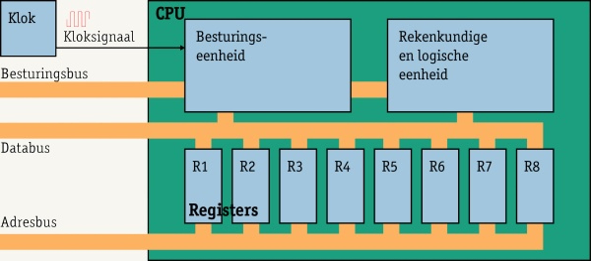
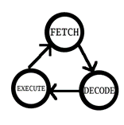
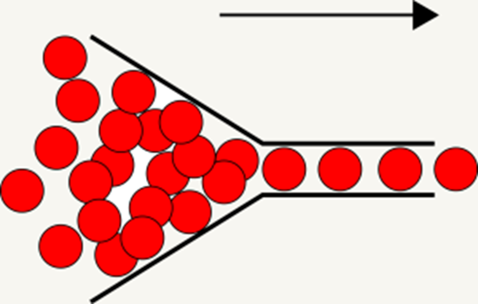
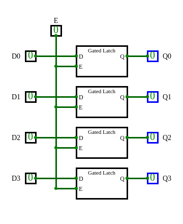

Computerarchitectuur#
Hoe werkt de computer?
Abstracties#
Van hardware naar software
transistoren / schakelingen
logische schakelingen
bitwise functies
berekeningen
CPU#
CPU staat voor Central Processing Unit. De nederlandse naam is CVE, wat staat voor Centrale Verwerkings Eenheid. Heeft als bijnaam ‘hart van de computer’. Het voert alle instructies en berekeningen uit.
De CPU is opgebouwd uit transistoren en schakelingen. Het heeft een aantal onderdelen met elk zijn eigen taak.

ALU: De Arithmetic and Logic Unit voert rekenkundige bewerkingen uit zoals optellen en aftrekken en kan waarden met elkaar vergelijken.
Besturingseenheid: is verantwoordelijk om het allemaal aan te sturen. Het haalt de instructies uit het geheugen, decodeert deze en voert de instructie uit.
De bus: Verantwoordelijk voor het vervoeren van data. Bestaat uit drie bussen. Databus is voor de data, addressbus voor het adress in het geheugen en de besturingsbus houdt bij wat de bus aan het doen is.
klok: Een simpel onderdeel dat eigenlijk alleen maar een aan/uit signaal doorgeeft. Elke keer als de klok een ‘tik’ geeft zal de processor een stap uitvoeren.
registers: Een type geheugen waar instructies en data bewaard kan worden. In een van de registers wordt de program counter bijgehouden. Zo weet de cpu welke instructie hij uit het geheugen moet halen.
Von Neumann cycle.#
De CPU haalt de instructie uit het geheugen en verhoogt de program counter (Fetch), decodeert de instructie (Decode) en voert de opdracht uit (Execute). Dit is de Von Neuman Cycle.

Von Neumann Bottleneck#
Een CPU kan maar 1 instructie per keer uitvoeren. Dit verzaakt een bottleneck als er veel instructies zijn die uitgevoerd moeten worden.

Oplossing: Meerdere cores.
Geheugen#
Soorten geheugen#
Registers#
Onderdeel van de Central Processing Unit (CPU)


4 gated latches vormen een 4 bit register
Geheugen opgebouwd uit logische schakelingen.
100 registers met 64 bits elk is ongeveer 10000 bits in totaal.
Werkgeheugen#
Random Access Memory (RAM)

Geheugen opgebouwd uit transistoren.
10GB geheugen is ongeveer 100 miljard bits.
Harde schijf#

Permanent geheugen op basis van gemagnetiseerd oppervlak
4TB geheugen is ongeveer 42 biljoen bits (of meer)
Solid state disk#

Permanent geheugen gebouwd uit logische schakelingen!
Flash memory, op basis van NOR of NAND schakelingen.
Lang geleden …#

De IBM RAMAC 305 (1956). 5 MB geheugen met een gewicht van 1000 kg.
Historisch#
640K ought to be enough for anybody
– Bill Gates (betwist)
In de machine#
Registers (CPU)
Programma’s worden hier opgehaald en instructies worden één voor één uitgevoerd
Werkgeheugen (RAM)
Programma’s die worden uitgevoerd zijn hier opgeslagen
Opslag (harde schijf en/of SSD)
Permanente opslag van data
Von Neumann architectuur#

CPU
beperkt, maar snel geheugen: registers
berekeningen
RAM
groter, maar langzaam geheugen
geen berekeningen

programmainstructies worden samen met data opgeslagen in RAM
Instructies en data worden tussen RAM en CPU heen en weer verplaatst